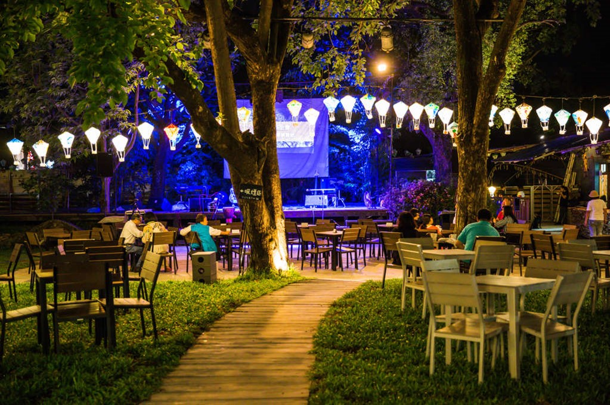
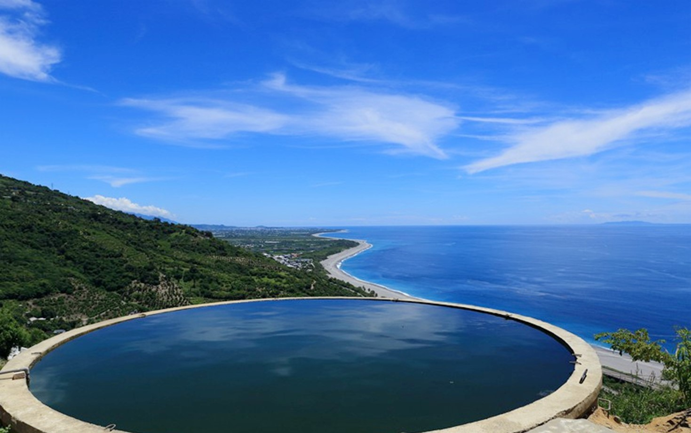

Qingshui Cliffs
-
Located:
Sanzhan, Xiulin Township, Hualien County , Taiwan (R.O.C.)
-
Introduction:
Located between Hualien County's Xiulin Township and Heping, the coastal cliff stretches for 22.7 kilometers. Due to tectonic plate collision and continuous uplifting, coupled with abundant rainfall, the overlying rock layers undergo weathering erosion, causing the deep-seated marble and schist to gradually uplift and emerge on the surface. Further influenced by intense coastal erosion, the slope becomes extremely steep, almost vertical. This is the reason behind the formation of the Qingshui Cliff, one of Taiwan's Eight Wonders.
In addition to being the most spectacular scenery along the eastern coast of Hualien, the Qingshui Cliff is also an excellent destination for observing sunrise and sunset. It is a famous scenic spot in Taiwan known for its breathtaking views.
Qixingtan
-
Located:
Beipu Village, Xincheng Township, Hualien County , Taiwan (R.O.C.)
-
Introduction:
Qixingtan, also known as Crescent Bay, is the only county-level scenic area in Hualien County, Taiwan. It is located in Beipu Village, Xincheng Township, on the eastern side of Hualien Airport. Qixingtan is a bay that protrudes from the side of Meilun Cape. It used to be the most prosperous place for fixed fishing development in Hualien. In the past, there were scattered lakes in the area, but now Qixingtan generally refers to the area north of Meilun Industrial Zone and Hualien Airport. The coastline stretches for over 20 kilometers, and the beach has a width of approximately 100 meters. Most of the beach consists of pebbles, making Qixingtan the perfect place near Hualien to enjoy the waves and collect stones.
Dongdamen Night Market
-
Located:
No. 50, Zhongshan Rd., Hualien City, Hualien County , Taiwan (R.O.C.)
-
Introduction:
Covering an area of approximately 9 hectares, the area includes attractions such as "Fucheng Night Market," "Indigenous Street," "Mainland Provinces Street," and "Huilan Heart (Sunshine Plaza)," totaling around 400 stalls. Dongdamen Night Market radiates from the core of Huilan Heart (Sunshine Plaza). The pedestrian walkway is paved with black and white granite tiles. With a grand and spacious design, the county government has carefully crafted Dongdamen Night Market, aiming to make it a new popular attraction in Hualien.
Fucheng Night Market: It has transformed from the original Rainbow Night Market.
Indigenous Street: Built with bamboo and wood materials, it exudes a strong primitive flavor. This area offers many indigenous specialty dishes that are rarely found in other night markets.
Mainland Provinces Street: It is adorned with red bricks and large red lanterns, creating a nostalgic atmosphere. This section sells a variety of regional dishes from provinces such as Guangdong, Guangxi, Henan, Hebei, Hunan, and Jiangxi, adding a diverse range of specialty foods to Dongdamen Night Market.
Ziqiang Night Market: The original Ziqiang Night Market, located on Ziqiang Road in Ji'an Township, closed its doors in November 2015. Some of the vendors from Ziqiang Night Market relocated to Dongdamen Night Market and continued their businesses there in the same year.
TieHua Village Music Community Slow Market
-
Located:
No. 26, Ln. 135, Xinsheng Rd., Taitung City, Taitung County , Taiwan (R.O.C.)
-
Introduction:
TieHua Village Music Community Slow Market is a transformation of the former Taiwan Railway warehouse dormitory. Here, you can listen to the powerful and melodious creations of indigenous singer-songwriters, savor the vibrant voices nurtured by the mountain and sea culture, and enjoy a cup of Taitung specialty drink at the Iron Flower Bar, indulging in a leisurely moment of relaxation. Adjacent to it, the Weekend Slow Market offers unique handmade crafts and local agricultural products. You can engage in conversations with the creators and local farmers, experiencing the warmth and relaxed atmosphere of Taitung's passionate and carefree lifestyle.

Zhiben Forest Road Waterfall
-
Located:
Located approximately 2 kilometers into Zhiben Forest Road in Beinan Township, Taitung County , Taiwan (R.O.C.)
-
Introduction:
Zhiben is most famous for its forest amusement park and hot springs, but hidden in the mountains across from the amusement park is a summer retreat known only to the locals - Zhiben Forest Road Waterfall. To reach the waterfall, you must navigate the winding mountain road. This waterfall is unique in that it is located right by the roadside, which is rare. One remarkable feature of Zhiben Forest Road Waterfall is its convenience - it can be considered the most easily accessible waterfall in Taiwan. Currently, cars and motorcycles can directly reach the waterfall without the need for any walking.
Huayuan Scenic Viewpoint - Sky Mirror
-
Located:
Taimali Township, Taitung County , Taiwan (R.O.C.)
-
Introduction:
Huayuan Scenic Viewpoint, also known as the Sky Mirror, features a water tower below that reflects the colors of the sky. Facing Huayuan Bay, the panoramic view of the sea and sky is truly vast. The viewpoint is situated on the mountainside, while the Sky Mirror is located in another open space. The unique feature of the water tower being directly connected to the road attracts many people who climb up to take photos.

Producers:
PUDS YU-FANG,CHOU CHIAO-YING,CHENG YI-CHIN,TSAI YU-HSUAN,HSIEH